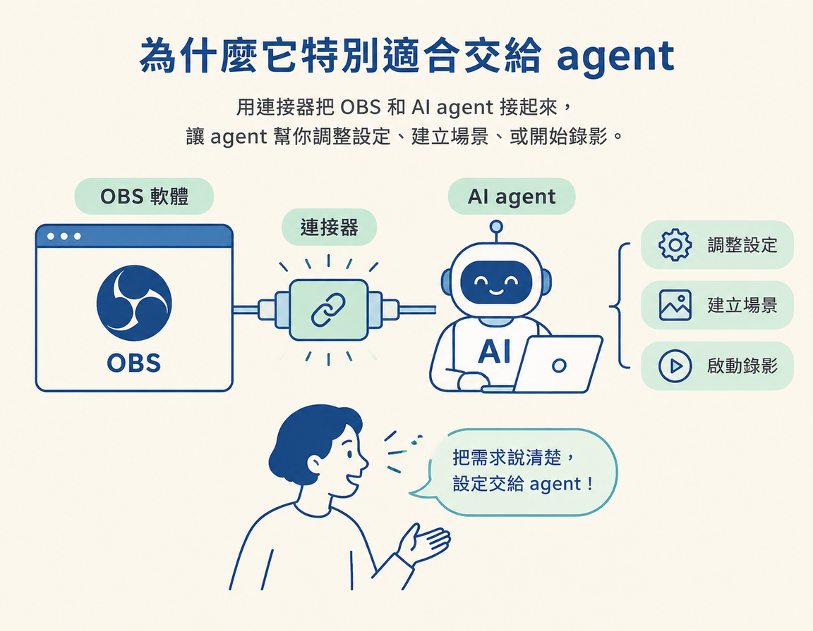

認識 OBS 能錄下哪些畫面，以及為什麼它適合交給 agent 操作。
上一節已經把器材的焦慮降到最低：手機就夠，先顧好聲音。接著，你可能會想拍一種內容：一邊說明，一邊展示畫面。像是示範軟體操作、檢視文件，或講一堂有畫面的課。這類「螢幕分享型」內容如果拿手機對著螢幕拍，不但麻煩，效果也不理想。
你需要一個能把螢幕和鏡頭畫面錄進同一支影片的工具。這一節要認識的 OBS，就是課程選用的工具。它免費、好用，還有一個重要優點：agent 可以直接操控它。換句話說，繁瑣的設定不一定得自己慢慢找，你可以把需求交給 agent 處理。
OBS，全名 OBS Studio，是一套免費、開源的錄影軟體，提供 Windows、Mac 和 Linux 版本。它常用來製作「螢幕分享型」內容，也就是你操作畫面、同時用聲音講解的影片。課程講師錄製螢幕內容時也使用 OBS，並提到它是這個圈子裡相當普遍的工具。
對你來說，重點很簡單：不必另外找付費或訂閱制軟體來錄螢幕，OBS 免費提供這些功能。
OBS 可以把不同的「來源」放進同一個畫面。你最常用到的幾種組合如下：
| 用途 | 畫面怎麼擺 | 什麼時候用 |
|---|---|---|
| 純螢幕 | 整個畫面呈現你正在操作的視窗 | 教學、示範或講解軟體操作 |
| 純鏡頭 | 整個畫面只有你本人 | 對著鏡頭說話，例如拍短影音 |
| 螢幕＋鏡頭 | 螢幕占滿畫面，你的鏡頭縮小放在角落 | 一邊講解，一邊讓觀眾看見你 |
| 直式畫面 | 把畫布設定為直式比例 | 製作要發布到短影音平台（shorts）的內容 |
OBS 也能設定成直式比例，方便製作短影音。許多設定不必自己在選單裡摸索；你可以直接告訴 agent 要直式畫面，請它幫你設定。
使用一般錄影軟體時，通常得自己點選單、找設定。OBS 的優勢是它夠熱門，社群也有人替它寫了 connector。Connector（連接器）就像轉接頭，能讓 agent 連上 OBS，幫你調整設定、建立場景，或開始錄影。

課程講師提到，Claude 和其他 agent 能驅動 OBS，是因為有人替它開發了 connector。因此，這門課的重點不是學會 OBS 每個選單怎麼操作，而是把需求說清楚，讓 agent 去做。課程使用社群 skill /search-connectors 來尋找目前可用的 connector：
/search-connectors這條指令會在下一節詳細說明。現在先記住：OBS 可以讓 agent 操作，這是課程選用它的重要原因。
課程講師展示自己實際使用 OBS 的畫面時，提到雖然 OBS 有很多設定，他平常最常用的功能其實是快捷鍵（hotkeys）。原因很實際：錄影時，不想為了切換畫面而停下來。設定快捷鍵後，按一下就能切換視角，例如放大自己，或叫出空白畫面遮住螢幕。這種錄影中切換畫面的做法，會在第五節詳細說明。
OBS 是一套免費、開源、跨平台的錄影軟體，可以錄螢幕、鏡頭，或兩者一起，也能設定直式比例來製作短影音。課程選用它的原因不只在於好用，也因為社群為它開發了 connector，讓 agent 可以直接操作。你只要說清楚需求，就能把設定交給 agent 處理。實際錄影時，快捷鍵則能讓你切換畫面，不必停下來操作。
工具選好了，還有一個容易踩到的坑：你找到的 connector 可能不是你以為的那個，也可能已經過期。下一節會接著說明，怎麼找出仍可使用的 connector，並開啟 WebSocket，讓 agent 確實連得上 OBS。